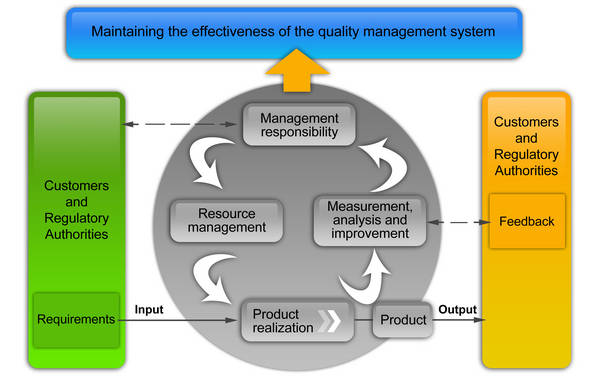

ISO 13485:2016 QMS for Medical Deices
Need Quality Management System (QMS) certification to meet new customer requirements?
Do you need EU CE marking?
What is ISO 13485:2016?
ISO 13485 is the quality management system standard for medical devices. This standard applies the ISO 9001:2015 process approach to quality, and replaces ISO 13485:2003 and ISO 13488:1996.
ISO 13485:2016 provides an effective base model for compliance with the EU CE marking Medical Devices Directives (Annex II, V, VI) and Health Canada CMDCAS* (class II, III & IV devices) requirements. ISO 13485:2016 is also considered to be fully compatible with the FDA QSR.
Note:
National/regional regulations may allow design of devices to be excluded from the assessment activity of lower risk devices.
ISO 13485 requires
- A process approach, supported by procedures for quality
- Focus on the customer, not just customer satisfaction
- Continual improvement, not just corrective/preventive action
What we do?
ISO Systems provides proven, proprietary implementation and training support to assure that your organization meets applicable ISO 13485 requirements promptly and effectively. A certified ISO 13485 Quality Management System will
- Assure you meet all customer quality requirements
- Improve your organization's competitiveness
- Eliminate waste
- Reduce risk
- Control process variation
ISO Systems ISO 13485 QMS Implementation Support is loaded with advantages for your organization.
We offer choices... you decide just how much support you need.
- Basic Support provides a process-based, documented, implemented, audited Quality Management System (QMS), acknowledging all ISO 13485 quality requirements, ready for certification.
- Full Support provides everything in Basic Support, plus we will train and mentor an Internal Quality Audit team for your organization.
ISO Systems will witness your certification audit, if you choose. Everything we provide meets one or more ISO 13485 requirements, including
- a quality manual unique to your organization, acknowledging all ISO 13485 requirements (no "gap assessment" required)
- documentation and implementation support for your value
- added quality management system
- development of a simple, effective document and record control system
- training of an Internal Quality Audit Team, if you choose
- a mentored, full system audit of the new quality management system (no registrar "preliminary assessment" required)
- corrective/preventive action support from the full system audit
- recommendation for an economical, effective registrar, if you choose
- our witness of your registration audit, if you choose
We take the time necessary to custom fit all applicable ISO 13485 requirements to your organization. No "consultant" is as willing and able as
ISO Systems to take the time to build a QMS to both reduce your costs and "pass the audit," guaranteed!
At
ISO Systems, we always offer No-Nonsense Pricing, all expenses included. "Consultants" normally charge more than we do, and provide less than we do.
ISO Systems is a smaller business... dollar-for-dollar, we provide more support! We welcome comparison!
ISO Systems proven, proprietary implementation and training methods assure your organization meets all ISO 13485 requirements in minimal time and at lowest cost.

Your organization is very busy... everyone wears more than one hat. Time to implement a quality management system is often limited. We take less time to get you certified. Quality system implementation is a "team sport..." however, if your organization does not have the time, we can deliver a turn-key system, guaranteed to get you certified.
Our methods never include one-size-fits-all, "cookie-cutter" approaches. ISO 13485 quality systems requires process approaches, customer focus, and continual improvement. You cannot get that from a cookie cutter. Most importantly, our quality management systems improve your bottom line. "Cookie cutter" approaches do not work, and only add cost.
When we leave, the quality management system is yours, not ours. We provide all the knowledge and experience your organization needs to effectively manage and improve your certified QMS in the future. When we are finished, your organization owns your ISO 13485 quality management system.
ISO Systems is our association of experienced, creative, enthusiastic quality professionals committed to building and improving quality systems while permanently reducing quality costs.